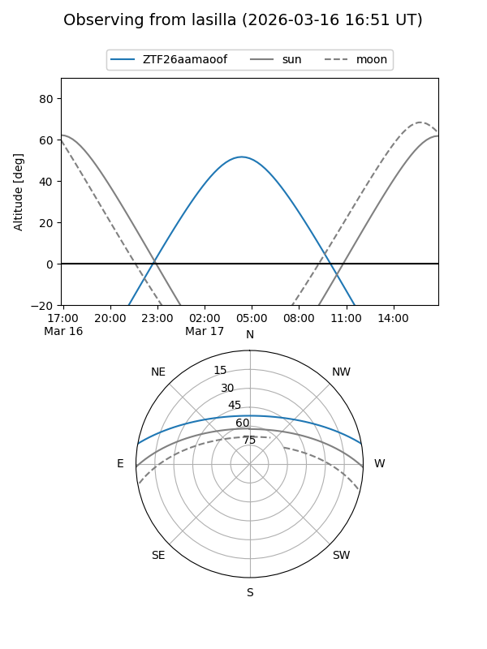
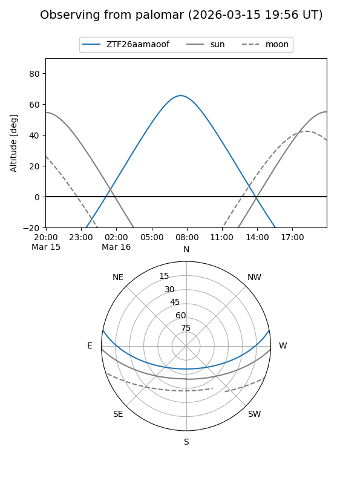

ZTF26aamaoof
Target ZTF26aamaoof at 2026-03-16 11:45
Aliases and brokers:
FINK: link
Lasair: link
ALeRCE: link
alt names
ZTF26aamaoof (ztf,fink_ztf)
Coordinates:
equatorial (ra, dec) = 168.9823,+9.15365
equatorial (HMS+DMS) = 11:15:55.76,+09:09:13.15
galactic (l, b) = (246.9830,+61.16286)
Flags:
Photometry:
last ztfg=17.59
1 ztfg detections
Lightcurve
Visibility


Additional plots